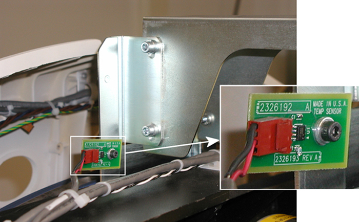

GEMS Proprietary Class: A
Direction 5117807-800, Rev# A
GEMS Proprietary Class: A |
| Required Persons | Preliminary Reqs | Procedure | Finalization |
|---|---|---|---|
| 1 |
Procedure Effectivity:
| Last Revised: | August 18, 2003 |
| Item | Qty | Effectivity | Part# | Manufacturer | |
|---|---|---|---|---|---|
| 5 MM. hex key | 1 | - | - | - | |
No consumables required.
No replacement parts required.
No general safety information.
No required conditions.
Remove right side cover.
| Always turn OFF the HVDC before the 120 VAC. Turning OFF 120 VAC power before HVDC power can result in equipment damage. | |
Turn OFF the three (3) power switches (Axial Drive, HVDC & 120VAC) on the gantry’s Service Switch Panel.
Remove the gantry top covers.
Remove the connector and the screw that secures the temperature sensor board.
Illustration 1: Temperature Sensor Board

Remove the old temperature sensor board.
Install the new temperature sensor board.
No finalization required.